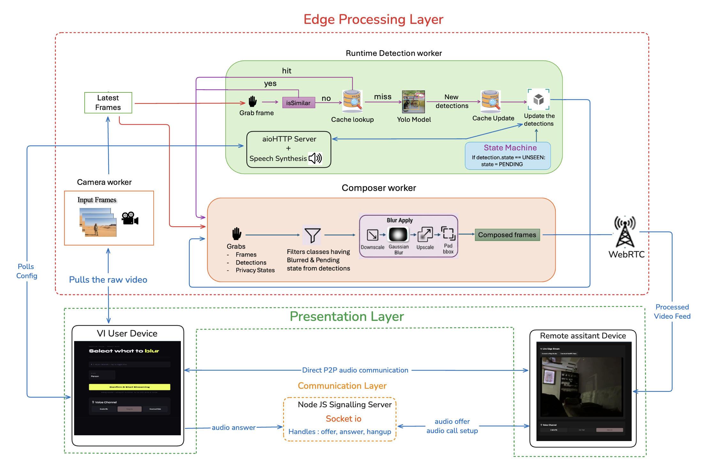
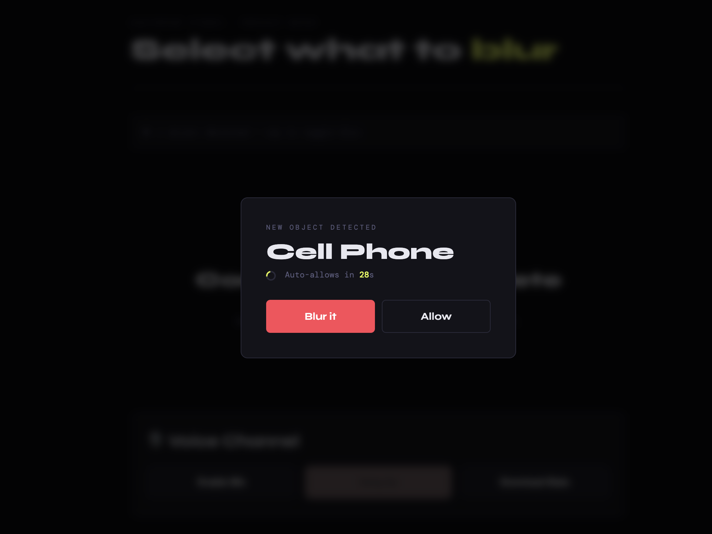
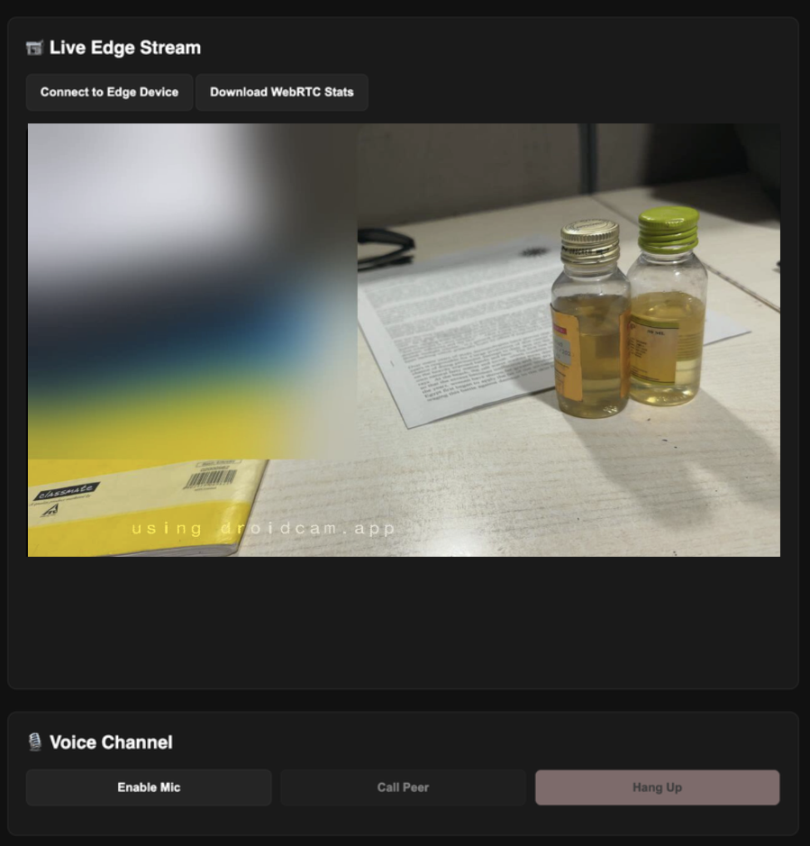
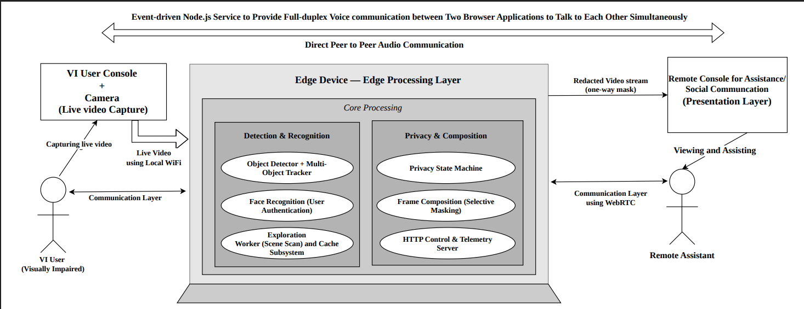

CLEVER-VI: Privacy-Preserving Live Remote Assistance
Conventional Remote Sighted Assistance (RSA) requires visually impaired (VI) individuals to share unconstrained raw camera feeds with remote assistants, exposing sensitive medical records, personal screens, and unconsenting bystanders. CLEVER-VI resolves this through an edge-processed live communication architecture where sensitive visual classes are selectively masked on-device before media leaves the user's network.
How privacy is enforced before transmission
The system keeps visual processing at the edge and gives the user a decision point before sensitive content reaches the remote assistant.




The Problem & User Insights
During preliminary field interactions, visually impaired participants voiced concern about ambient visual exposure and the loss of control over what a remote assistant could see.
“Why does your system need to see my home if it can't even protect what it sees?”
Participant insight that shaped the privacy-control requirement.
Design Question & Solution
How can a person receive remote assistance without surrendering control over what their camera shares? CLEVER-VI introduces a four-state privacy model combined with edge object detection and selective blurring. The user remains in full control of sensitive classes before transmission.
Research & Evaluation
Evaluated with 7 VI participants across 21 trial sessions spanning document reading, object retrieval, and social video communication. The system achieved 91.25% privacy recall while preserving non-private content and maintaining real-time WebRTC streaming at 30 fps.
What I Learned from Evaluation
The study showed that the interaction could not be separated from the environment and users' existing habits. These findings became design implications rather than simply post-study observations.
Clutter slowed key finding
Visual complexity affected object retrieval performance.
Users wanted proactive privacy support
Participants preferred automatic detection of sensitive documents.
Familiar interaction patterns mattered
Adoption was influenced by familiarity with video-calling tools.
My Contribution
- Core system architecture and WebRTC communication pipeline design.
- Computer vision integration (YOLO-based edge detection and face recognition).
- User-study design, trial moderation, and qualitative/quantitative data analysis.
.jpg)